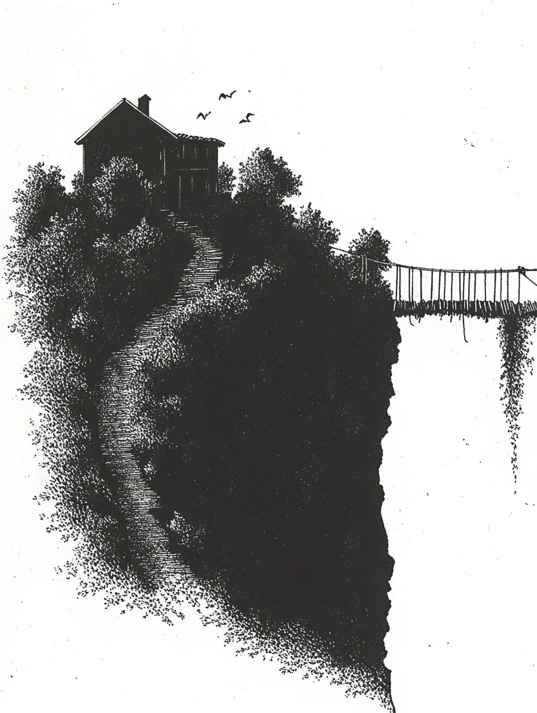

생각이 깨끗하고 확실하게 떠올랐다: 충분해. 극적인 멈춤도 없이—그저 허공으로 내딛는 단순한 한 걸음이었다.
[The thought arrived clean and final: enough. No dramatic pause—just the simple step forward into empty air.]
낙하는 물리학이 허용해야 할 것보다 더 오래 지속되었다. 콘크리트여야 했을 땅이 갑작스러운 무게에 신음하는 나무 판자가 되었다.
[The fall lasted longer than physics should allow. The ground that should have been concrete became wooden planks that groaned under sudden weight.]
다리가 앞으로 뻗어 있었다. 뒤에는 바라보기만 해도 아픈 회색빛 외에는 아무것도 없었다. 한 주먹에는 구겨진 종이가, 다른 주먹에는 연필이 쥐어져 있었다. 둘 다 여행을 함께했다—연필은 따뜻했고 앞으로 끌어당겼으며, 이곳을 지배하는 어떤 규칙에도 영향받지 않았다.
[A bridge stretched ahead. Behind lay nothing but gray that hurt to look at. The page crumpled in one fist, the pencil in the other. Both had made the journey—the pencil warm and pulling forward, immune to whatever rules governed this place.]
첫 번째 판자가 신데렐라의 자정 저주를 발동시켰다. 옷이 가장자리부터 해어지기 시작했고, 한 걸음씩 내딛을 때마다 천이 낡아갔다. 두 번째 판자는 야수의 변신을 가져왔다—귀가 길어지고, 코가 씰룩거리며, 연필이 더 세게 끌어당기는 동안 토끼 같은 특징들이 나타났다. 세 번째 판자는 팔다리를 나무처럼 뻣뻣하게 만들었고, 관절이 오래된 가구처럼 삐걱거렸지만, 여전히 연필은 앞으로 끌어당겼고, 소유자를 사로잡는 변화들에는 영향받지 않았다.
[The first plank triggered Cinderella’s midnight curse. Clothes began fraying at the edges, fabric deteriorating with each step. The second plank brought Beast’s transformation—ears lengthening, nose twitching, bunny features emerging as the pencil pulled harder. The third plank turned limbs wooden and stiff, joints creaking like old furniture, but still the pencil dragged forward, unaffected by the changes claiming its bearer.]
다리 끝에서 주인공은 너덜너덜한 옷을 입은 채 부서진 꼭두각시처럼 움직였고, 토끼 귀는 축 늘어져 있었지만, 연필은 목적의식으로 타올랐다.
[By the bridge’s end, the protagonist moved like a broken marionette in rags, bunny ears drooping, but the pencil burned with purpose.]
집이 앞에 솟아올랐는데, 이야기의 뼈로 지어진 것이었다. 나무 발이 문지방을 넘는 순간, 변신이 역전되었다—옷이 수선되고, 얼굴이 인간으로 돌아오고, 팔다리가 살을 되찾았다. 집의 보호 마법이 다리가 앗아간 것을 되돌려 주었다.
[The house rose ahead, built from narrative bones. The moment wooden feet crossed the threshold, the transformations reversed—clothes mended, features returned to human, limbs regained flesh. The house’s protective magic restored what the bridge had taken.]
연필은 스스로 재배열되는 복도들을 지나, 다른 세기들로 열리는 출입구들을 지나쳐, 램프 불빛이 양피지 위에 구부린 한 인물 주위로 고여 있는 방에 도달할 때까지 이끌었다.
[The pencil led through corridors that rearranged themselves, past doorways opening onto different centuries, until it reached a room where lamplight pooled around a figure bent over parchment.]
그녀가 고개를 들었다—목 주위로 보석처럼 둘러진 밧줄 화상 자국, 홍채 대신 하늘을 반사하는 눈. 어떤 다리 건너기보다도 앞선 흔적들로, 집의 마법도 건드리지 않고 남겨둔 것들이었다. “또 한 명이군. 뭘 가져왔지?”
[She looked up—rope burns circling her throat like jewelry, eyes reflecting sky instead of iris. Marks that predated any bridge crossing, that the house’s magic left untouched. “Another one. What did you bring?”]
빈 종이가 스스로 펼쳐졌다. 연필이 손가락에서 뛰어내려 무언가 죽어가는 것이 누워 있는 침대 쪽으로 달려갔다.
[The blank page uncrumpled itself. The pencil leaped from fingers to skitter toward a bed where something lay dying.]
이야기 하나가 거친 숨을 헐떡이며 숨 쉬고 있었다.
[A story, breathing in ragged gasps.]
“손 없는 소녀,” 여자가 말했다. “며칠째 사라져가고 있어. 현대 독자들은 사랑을 위해 상실을 선택하는 걸 이해할 수 없거든.”
[“The Girl Without Hands,” the woman said. “She’s been fading for days. Modern readers can’t understand choosing loss for love.”]
연필이 양피지에 눌려 쓰기 시작했는데, 주인공 자신의 것과는 조금 다른 필체였다: 아버지의 칼날이 아버지의 빚이 요구한 것을 가져갔다. 하지만 손은 인내심으로 돌볼 때 다시 자란다.
[The pencil pressed against parchment, writing in handwriting not quite the protagonist’s own: Father’s blade took what father’s debt demanded. But hands grow back when tended with patience.]
“이 이야기를 알고 있나?”
[“You know this one?”]
“모든 버전을 알아. 하지만 왜 그녀가 손을 잘리도록 선택했는지는 이해할 수 없었어.”
[“Every version. But I never understood why she chose to let them be taken.”]
“어떤 희생은 씨앗을 심기 때문이야. 이야기들이 죽는 건 사람들이 상실이 문이 될 수 있다는 걸 잊기 때문이지. 그들은 쉬운 마법을 원하고, 최고의 이야기들은 먼저 무언가를 잃어야 한다는 걸 잊어버려.”
[“Because some sacrifices plant seeds. Stories die because people forget loss can be doorway. They want easy magic, forget the best tales require losing something first.”]
연필이 더 빠르게 썼다: 유배의 정원에서, 그녀는 손가락을 기억하는 그루터기로 자라는 것들을 돌보는 법을 배웠다. 손이 돌아왔을 때, 그것들은 뿌리의 지혜를 담고 있었다.
[The pencil wrote faster: In exile’s garden, she learned to tend growing things with stumps that remembered fingers. When hands returned, they carried wisdom of roots.]
“나는 뛰어내렸어,” 말이 단순하게 나왔다. “끝을 선택하는 거라고 생각했어.”
[“I jumped,” the words came simple. “I thought I was choosing an ending.”]
“그랬나?”
[“Were you?”]
연필이 쓰기를 마치고 기다리는 손가락들 곁으로 굴러가 멈췄다. 여전히 따뜻했지만, 더 이상 절망적이지는 않았다. 손 없는 소녀가 평화로운 고요함 속에 안착했다—보존되고, 완전해진 채로.
[The pencil finished and rolled to rest against waiting fingers. Still warm, no longer desperate. The Girl Without Hands settled into peaceful stillness—preserved, complete.]
“다리는 양방향으로 작동해.”
[“The bridge works both ways.”]
“그래. 하지만 이야기들은 돌보는 사람이 필요해. 죽는다는 게 사라진다는 뜻이 아니라는 걸 이해하는 사람들이. 보존에는 희생이 필요하다는 걸 아는 사람들이.”
[“It does. But stories need tenders. People who understand dying doesn’t mean gone. That preservation requires sacrifice.”]
빈 종이는 빈 채로 남아 있었다—비어있는 게 아니라, 가능성으로 무한한 채로. 연필이 이제 다르게 느껴졌다, 인내심 있고 준비된 채로.
[The blank page remained blank—not empty, but infinite with possibility. The pencil felt different now, patient and ready.]
“머물 거야. 적어도 내 손이 무엇을 위한 것인지 이해할 때까지는.”
[“I’ll stay. At least until I understand what my hands are for.”]
밖에서는 새들이 새로 시작되는 이야기들의 조각들을 불러댔다.
[Outside, birds called fragments of new stories beginning.]